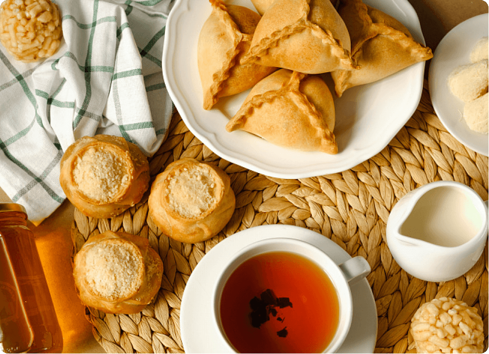
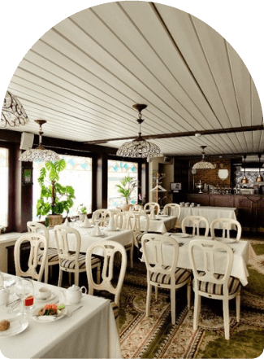

Как связаны Золотая Орда и стейк тартар, кони и тюльпаны; поэты и незваные гости. Попробуем тутырму, замедлим ход времени и помедитируем среди лотосовых озёр. И всё это — не вставая с дивана — как в сказке.

о татарах
Татары — народ, составляющий почти 4% всего населения нашей страны. Они живут в основном в центральных областях европейской части России, а ещё в Поволжье, Приуралье, Сибири, Средней Азии, Казахстане и на Дальнем Востоке.

После того, как в XV веке Золотая Орда раздробилась на мелкие ханства, появились казанские, астраханские, сибирские татары и татары-мишари. Впрочем, эта гипотеза происхождения татар не единственная. Да и генетические исследования открывают всё более увлекательные и пока необъяснённые подробности.
Как бы то ни было, татарский относят к кыпчакской подгруппе тюркских языков. В Республике Татарстан татарский язык – государственный, наряду с русским. И где бы татары ни поселились, они очень уважают свою национальную самобытность, чтут язык, сохраняют обычаи и культуру.
Как бы то ни было, татарский относят к кыпчакской подгруппе тюркских языков. В Республике Татарстан татарский язык – государственный, наряду с русским. И где бы татары ни поселились, они очень уважают свою национальную самобытность, чтут язык, сохраняют обычаи и культуру.
Большинство историков считают, что современные татары — потомки монголо-тунгусо-маньчжурских кочевников, половцев, хазар и волжских булгар. Основой татарского языка стал половецкий, на национальную письменность повлияли тюркская руника и арабская графика, а исламскую традицию и городскую культуру татары заимствовали в Волжской Булгарии. Геополитическим центром новой нации стал Улус Джучи, иначе говоря Золотая Орда — средневековое государство, входившее в состав грандиозной Монгольской империи Чингиз-хана.

Традиции и кухня
Среди многочисленных национальных традиций, уходящих корнями в Средневековье и бытующих до сих пор в каждом доме, важнейшей и живой остается татарское чаепитие.
Это совсем не перекус на ходу, а настоящее застолье с разговорами и угощением. К чаю обязательно подают мед и сладости, а иногда и пироги.
Вежливый гость должен выпить
не меньше трех чашек, а
радушный хозяин никогда не
нальёт чай до краев. Ведь полную чашку подают лишь нежеланным гостям.
не меньше трех чашек, а
радушный хозяин никогда не
нальёт чай до краев. Ведь полную чашку подают лишь нежеланным гостям.

Татарское чаепитие

Легенды о неутомимой татарской коннице, способной в один переход покрыть сотни километров, добрались даже до европейских кулинарных книг. Придуманный французскими поварами способ подавать к столу мелко нарезанное сырое мясо — а-ля тартàр (так во Франции некогда услышали от китайцев и запомнили слово «татарин»), будто бы опирается на привычку татарских всадников класть под седло ломоть говядины — к концу скачки он превращается в сырой бифштекс, который остаётся лишь слегка приправить специями и съесть. Это, скорее всего, выдумка, однако классические татарские блюда и в наши дни готовят из того, что всегда под рукой — из мяса (жареного, тушёного, вяленого) и скороспелого теста.
Свинина в традиционный рацион не входит, зато конская колбаса — казы — настоящий деликатес. Требующие много времени поварские техники, вроде ферментации, засолки, томления часами на слабом огне — не для татар. Еду готовят быстро — видимо, сказывается кочевое прошлое. Зато застолье с неспешными разговорами, уважительными шутками и ощущением умиротворения и спокойствия может длиться часами. Вот несколько хитов татарской кухни.

Современные татары занимаются тем же, чем и все прочие земляне: растят детей, стараются быть счастливыми и как-то совмещать внутреннюю гармонию и работу. И хотя лучшее, конечно, впереди, иногда кажется, что в прошлом люди были мудрее, а жизнь их текла размереннее.
Сапог детский. Конец XIX-начало XX века. Мозаика по коже. Национальный музей республики Татарстан.
Долгими зимними вечерами татарские мастерицы мечтали о лете, отсюда — непривычно яркие цветочные узоры на традиционных скатертях, рубашках, нарядных пиалах и наволочках. Мужчины среди прочего занимались сапожным делом и мастерски складывали мозаику из разноцветной кожи. Сшитые в этой технике сапоги берегли и передавали по наследству, а надевали лишь по особым случаям. Или дарили детям.
Наволочка белая с татарским цветочным орнаментом. 1920-е годы. Вышивка тамбурным швом. Краеведческий музей Бавлинского муниципального района республики Татарстан. Ислам запрещает изображение людей и животных, поэтому традиционный мотив татарских узоров — цветы и травы.


Стиль и спокойствие
ТАТАРСКАЯ пижама
Взрослая пижама
с калмыкскими узорами
с калмыкскими узорами
Орнаменты живут и в современной культуре. Например, эту пижаму с узорами мы создали в коллаборации со студией Outlaw Creative — творческим подразделением бренда одежды Outlaw Moscow. Дизайнер бренда Диляра Минрахманова уже имела дело с традиционными народными узорами и лихо адаптирует их к современным представлениям о прекрасном и модном.
И кстати, Диляра родилась и выросла в Татарстане, а стало быть, все эти травинки, листочки и завитки — часть ее детских воспоминаний, самый счастливый, радужный и безмятежный культурный код.

Баю баю Колыбельная
Знакомство с новой культурой бывает волнительным, но колыбельная может стать неплохим успокаивающим саундтреком. Эта колыбельная была записана во время фольклорной экспедиции в 1973 году в деревне Верхняя Терешка Старокулаткинского района Ульяновской области.
ТАТАРСКАЯ
КОЛЫБЕЛЬНАЯ
Баю-баю – заснет он.
В Бухару поедет он.
Когда вернется из Бухары,
Муллою будет он.
Книги не запрячет,
Плохое не полюбит,
Как ленивые дети,
Играя и смеясь, лежать без дел не будет.
Красивым быть хорошо,
Набираться знаний нужно,
У такого ребенка
Будет светлая судьба.
Вот уж вырос этот мой милый,
Очень пригожий он, оказывается,
То ли цветочек, то ли в цветке
Заночевавший соловей он.
Баю-баю, мой желанный,
Расскажу тебе я сказку.
Ты, мой милый, словно луна,
Засни, растаяв как масло.
В Бухару поедет он.
Когда вернется из Бухары,
Муллою будет он.
Книги не запрячет,
Плохое не полюбит,
Как ленивые дети,
Играя и смеясь, лежать без дел не будет.
Красивым быть хорошо,
Набираться знаний нужно,
У такого ребенка
Будет светлая судьба.
Вот уж вырос этот мой милый,
Очень пригожий он, оказывается,
То ли цветочек, то ли в цветке
Заночевавший соловей он.
Баю-баю, мой желанный,
Расскажу тебе я сказку.
Ты, мой милый, словно луна,
Засни, растаяв как масло.
Әлли-бәлли итәр бу
Бохарага китәр бу.
Бохарадан кайткачтын
Мулла булып җитәр бу.
Китабын качаратмас,
Начарлыкны яратмас.
Ялкау балалар кебек
Уйнап-көлеп тик ятмас
Матур булу әдәпле
Сабак уку сәбәпле
Моның кебек яхшы бала
Булыр якты гадәтле
Үсеп җиткән иркәм бу,
Бигрәк күркәм икән бу,
Чәчәк микән, гөлләргә
Кунган был-был микән бу.
Әллү-бәллү көйләрем
Хикәяләр сөйләрмен.
Син дә иркәм ай кебек
Йокла эреп май кебек
Бохарага китәр бу.
Бохарадан кайткачтын
Мулла булып җитәр бу.
Китабын качаратмас,
Начарлыкны яратмас.
Ялкау балалар кебек
Уйнап-көлеп тик ятмас
Матур булу әдәпле
Сабак уку сәбәпле
Моның кебек яхшы бала
Булыр якты гадәтле
Үсеп җиткән иркәм бу,
Бигрәк күркәм икән бу,
Чәчәк микән, гөлләргә
Кунган был-был микән бу.
Әллү-бәллү көйләрем
Хикәяләр сөйләрмен.
Син дә иркәм ай кебек
Йокла эреп май кебек
Прекрасная песня, полные надежд напутствия. Но когда ты уже не младенец, возникают вопросы:
зачем ребёнку ехать в Бухару? Почему именно туда? И как эта поездка научит его хорошему? Ужасно любопытно!
зачем ребёнку ехать в Бухару? Почему именно туда? И как эта поездка научит его хорошему? Ужасно любопытно!
А дело в том, что в Бухаре с XVI
века и по сей день работает
медресе Мири-Араб —
знаменитое на всю Среднюю
Азию духовное учебное
заведение. Значит, мальчик будет взрослеть, набраваясь мудрости у бухарских мударрисов (преподавателей).
века и по сей день работает
медресе Мири-Араб —
знаменитое на всю Среднюю
Азию духовное учебное
заведение. Значит, мальчик будет взрослеть, набраваясь мудрости у бухарских мударрисов (преподавателей).

Алиса, включи
татарскую колыбельную
татарскую колыбельную
Исполняет группа Juna:
Тимур Милюков — гитара, саз, дойра, калимба, синтезаторы, электроника
Пётр Егоров — перкуссия
Ания Файзрахманова — вокал.
Вот, что рассказывает о кредо группы Тимур Милюков
Тимур Милюков — гитара, саз, дойра, калимба, синтезаторы, электроника
Пётр Егоров — перкуссия
Ания Файзрахманова — вокал.
Вот, что рассказывает о кредо группы Тимур Милюков

«Мы пытаемся помочь татарской культуре существовать и развиваться сегодня, а не сохранить её такой, какой она была исторически. Мы пишем новые песни на татарском языке на стихи современных татарских поэтов. Мы верим, что народная культура — это не музейный экспонат, а инструмент, нужный для жизни современному человеку».
Познакомьтесь поближе
город Казань
Казань – столица и сердце Республики Татарстан, отметившая свое тысячелетие в 2005 году. Это крупнейший город Приволжского федерального округа, расположенный на левом берегу Волги. Здесь постоянно происходят громкие события: открываются новые рестораны и бары, проходят концерты и спортивные мероприятия.
За столичной энергетикой сюда приезжают со всей республики. А за татарской культурой – со всей страны, тут она представлена с самых разных сторон. Однако, даже в таком большом и шумном городе, мы нашли места для неспешных прогулок и обретения гармонии.
Туры в Казань

Старо-татарская слобода
Яркие дома (каменный низ, деревянный узорчатый верх) татарских купцов, промышленников и буржуазии; несколько кафе традиционной кухни, серьезный музей поэта Губадуллы Тукая и легкомысленный музей чак-чака (главного татарского печенья) — прогулка займет полдня, не меньше.

ул. Кирова, 3
Национальный музей Республики Татарстан
Стоянка древнего человека и карета времен Екатерины II, национальные костюмы и традиционное оружие, ремесла и книги, быт и духовная жизнь — максимально широкий взгляд на историю и культуру Татарстана. Было бы, как минимум, невежливо оказаться в главном татарском городе России и проигнорировать это собрание. Тем более, что посетителей здесь куда меньше, чем напротив — в недавно обновлённых музеях Казанского кремля. А время в залах бывшего Гостиного двора, где располагается музей, словно бы замедлилось. Поход сюда — самое то для обстоятельного и не суетного погружения в истории об Истории.
ул. Кремлевская, 2
Музей Каюма Насыри
Личные вещи татарского филолога и писателя Каюма Настыри разместили в точной копии его дома. А в саду лекарственных растений при музее воплотили в жизнь книгу Насыри «Цветы и травы» и совместили духоподъемное с приятным.
ул. Кирова, 3

Закабанная мечеть
Посвященная тысячелетию принятия ислама в Поволжье, мечеть интересна уже потому, что построили ее на заре советской власти — в 1920-х годах, в разгар антирелигиозной кампании. Но для тех, кто в любом странствии ищет спокойствия, сама прогулка к мечети вдоль озера Кабан будет умиротворяющей.
ул. Кирова, 3

Казанский Богородицкий мужской монастырь
К татарской культуре православная обитель, построенная в классицистическом стиле, отношения не имеет. Однако в отечественной истории это место сыграло большую роль. Именно здесь в июле 1579 года по преданию был обретён образ Казанской Божией Матери — одна из самых почитаемых в России икон. Чтобы не толкаться среди паломников и туристов, стоит изучить расписание богослужений и приходить в промежутках между службами. На обширной монастырской территории немало укромных уголков, где можно вдоволь предаваться мечтам и размышлениям.
ул. Кирова, 3

А где поесть
Ресторанов и кафе в Казани, как в любом мегаполисе полно на любой вкус и запрос. Однако, мы выбрали несколько мест, где готовят традиционные татарские блюда и избегают чересчур модных веяний.
Назвать тихими или спокойными
эти рестораны сложно, ведь там,
где вкусно, людей всегда немало.
К тому же, казанские
рестораторы, как правило, располагают свои заведения в огромных помещениях,
рассчитанных на большое
количество едоков.
эти рестораны сложно, ведь там,
где вкусно, людей всегда немало.
К тому же, казанские
рестораторы, как правило, располагают свои заведения в огромных помещениях,
рассчитанных на большое
количество едоков.
И все же, официанты всегда помогут найти уютный столик, а уж когда на нем устроятся щедрые татарские блюда, спокойствие и хорошее настроение гарантированы.
«Чирэм»
Если прийти в компании, а не в одиночку, то в один присест можно попробовать каклаган-каз (вяленого гуся), кыстыбай (тонкую лепешку с начинкой), фермерский сыр, тутырму (конскую колбасу с гречкой), пирожки элеш и эчпочмаки. А после — ещё и домашнего варенья к травяному чаю попросить.
Если прийти в компании, а не в одиночку, то в один присест можно попробовать каклаган-каз (вяленого гуся), кыстыбай (тонкую лепешку с начинкой), фермерский сыр, тутырму (конскую колбасу с гречкой), пирожки элеш и эчпочмаки. А после — ещё и домашнего варенья к травяному чаю попросить.
ул. Федосеевская, 1а
«Биляр»
Домашняя лапша с курицей или бульон с эчпомаком? Пельмени с бараниной или жареная на сковородке форель? Уха
волжская, конина с грибами,
пироги из дровяной печи — всё,
как у бабушки.
Домашняя лапша с курицей или бульон с эчпомаком? Пельмени с бараниной или жареная на сковородке форель? Уха
волжская, конина с грибами,
пироги из дровяной печи — всё,
как у бабушки.
адрес: ул. Бутлерова, 31

«Татарская усадьба»
Расположенный в Старо-татарской слободе внушительный ресторанно-гостиничный комплекс рассчитан на туристов. Но пугаться не стоит! Казанские гурманы тоже любят здешнюю кыздырму (телятину с картошкой), а уж они-то знают толк в национальной кухне. А еще «Татарская усадьба» расположено прямо на набережной озера Кабан, так что после знатного обеда можно полюбоваться окрестностями и дойти по берегу до ближайшего парка.
Расположенный в Старо-татарской слободе внушительный ресторанно-гостиничный комплекс рассчитан на туристов. Но пугаться не стоит! Казанские гурманы тоже любят здешнюю кыздырму (телятину с картошкой), а уж они-то знают толк в национальной кухне. А еще «Татарская усадьба» расположено прямо на набережной озера Кабан, так что после знатного обеда можно полюбоваться окрестностями и дойти по берегу до ближайшего парка.
ул. Шигабутдина Марджани, 8
Но не только Татарстан
Прежде, чем стать самостоятельным ханством, Хаджитарханом из татарских легенд, нынешняя Астраханская область побывала в составе Хазарского и Тюрскского каганатов, Ногайской и Золотой орды.
Обычаи и жизненный уклад астраханских, казанских и мишарских татар не растворилась в мультикультурной Астрахани и шире — в Нижнем Поволжье. В резных домах Татарской слободы читают, выходящую на родном языке газету «Идель», а покупки делают на колоритном Татар-базаре.
Чтобы найти умиротворение и обрести гармонию, нет ничего лучше, чем выбраться на природу. Неподалеку от Астрахани, расположенной в дельте реки
Волги, раскинулись живописные владения Астаханского биосферного заповедника, а там — прекрасные лотосовые озера и бесшумные паромные переправы.
Волги, раскинулись живописные владения Астаханского биосферного заповедника, а там — прекрасные лотосовые озера и бесшумные паромные переправы.
А еще наблюдение за краснокнижными птицами и скольжение на лодке по водной глади, волжская уха, пряный степной воздух и солоноватый Каспийский ветер. Поездка в эти места заставит забыть стресс и восстановит силы. Правда, фотоаппарат очень скоро устанет и память его запросит пощады.
Туры в Астрахань
Центральная мечеть (она же — Красная или Кызыл-мечеть)
ул. Кирова, 3
Астраханский биосферный заповедник
ул. Кирова, 3
Сарай-батау — туристический центр на месте столицы Золотой орды
ул. Кирова, 3
Татарская и русская культура по-прежнему мирно соседствуют в живописном городке Касимов (Рязанская область).
Расположенный в 165 километрах от Рязани древний город Низовой Городец был пожалован Василием Тёмным союзнику, татарскому царевичу Касиму, и на два века стал столицей влиятельного Касимовского ханства. Здесь порой кажется, что время течет неспешно, точно в XVIII веке, а главный повод для волнения — выбор блюд к обеду.

С крутого косогора открывается такой благолепный вид на реку Оку, что рука сама собой тянется к воображаемому мольберту — ни один фотоаппарат гармонию такого пейзажа не передает. Из Касимова можно по-старинке, без суеты и раздражения, уплыть, куда глаза глядят.
А в самом городе осмотреть
чудом сохранившиеся, но, увы, подрастерявшие декор,
усыпальницы татарских шахов и особняки торговцев каракулем, ямские станции и лавки ремесленников — всё это касимовцы ценят,
восстанавливают и берегут.
Больше узнать о взаимном обогащении культур, о татарских предпринимателях, меценатах, поэтах и ремесленниках можно в небольших городских музеях.
Главное — не торопиться.
чудом сохранившиеся, но, увы, подрастерявшие декор,
усыпальницы татарских шахов и особняки торговцев каракулем, ямские станции и лавки ремесленников — всё это касимовцы ценят,
восстанавливают и берегут.
Больше узнать о взаимном обогащении культур, о татарских предпринимателях, меценатах, поэтах и ремесленниках можно в небольших городских музеях.
Главное — не торопиться.
Касимовский историко-художественный музей-заповедник
ул. Кремлевская, 2
Хасанская мечеть XVIII-XIX вв. с минаретом XVI в.
ул. Кремлевская, 2
Татары — второй по численности народ, населяющий Оренбург и одноименную область.
Оренбургские степи
Татары — второй по численности народ, населяющий Оренбург и одноименную область. Однако, помимо нескольких мечетей XIX
века, архитектурных памятников татарской присутствия в городе
не сохранилось. Зато
нематериальная культура — традиционные праздники, национальные школы, государственный театр и даже официально признанная Оренбургская культурная
автономия процветают.
века, архитектурных памятников татарской присутствия в городе
не сохранилось. Зато
нематериальная культура — традиционные праздники, национальные школы, государственный театр и даже официально признанная Оренбургская культурная
автономия процветают.
Поездка по бескрайней Оренбургской степи — шокирующее, просветляющее и медитативное приключение. Тут всё как во времена «Капитанской дочки», разве что ямщик не затягивает бесконечную меланхоличную песню. Но с этим вы и сами справитесь, вот услышите.
Туры в Оренбург
Мечеть «Хусания»
ул. Кирова, 3
Оренбургский государственный драматический татарский театр имени Мирхайдара Файзи
ул. Кирова, 3
Село Татарская Каргала — крупный центр приграничной торговли в XVIII-XIX веках, ближайший к Оренбургу центр татарской культуры и традиционный некрополь: Сакмарский район Оренбургской области
ул. Кирова, 3
Татарская слобода или Заисточье (город Томск)
Отыскать такой портал в прошлое в городе молодых и энергичных студентов — превосходный подарок себе.
ул. Кирова, 3
Эуштинские татары живут в этих местах со времен Бориса Годунова, еще до рождения города. А сегодня Заисточье — живой микрорайон, застроенный колоритными, со множеством резных деталей, деревянными домами XVIII — XX веков — место романических прогулок и погружения в обстоятельный сибирский уклад.

татарский сувенир
Главный и любимый татарский цветок — это тюльпан. Его стилизованные изображения можно найти в национальных вышивках и росписях, а стилизацию — в орнаментах.
Татарская пиала, напоминающая раскрывшийся тюльпан и тюльпановым узором расписанная, пригодится вам, даже если чай вы пьете только в гостях. Для сластей, бульона или как украшение дома и напоминание о том, что время от времени нужно переводить дух и никуда не торопиться.
Подобрать подходящий для вас тур в Республику Татарстан вы можете на сайте